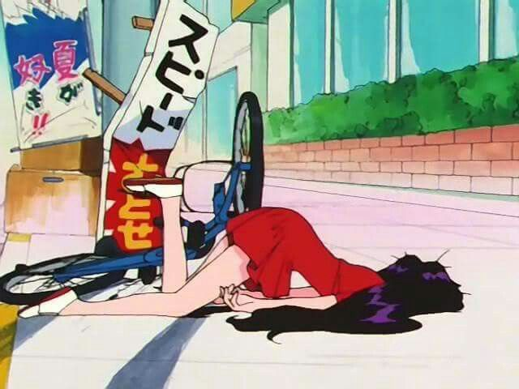
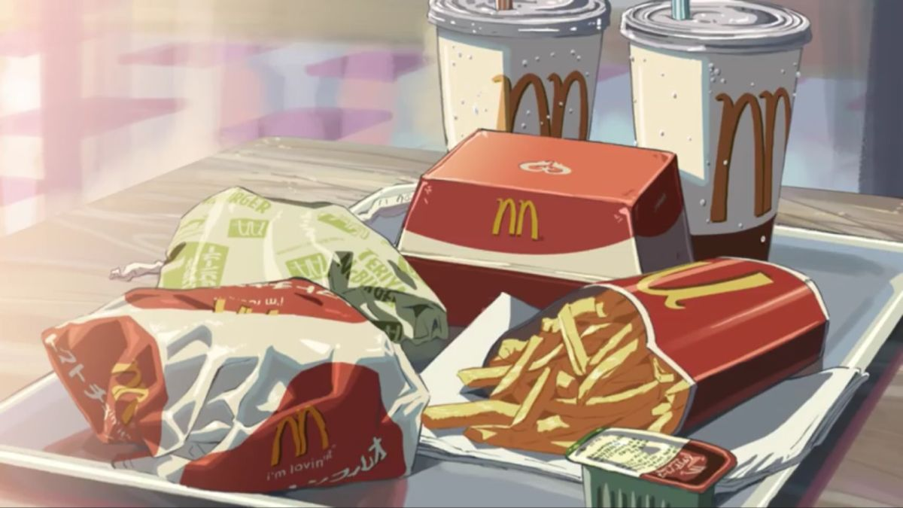

A McDonald's Brand Strategy Pitch
I started noticing how people talk about their McDonald's runs, and it's never about the food. It's about the day they just survived. That thread turned into this.
We see the success, but the effort behind it stays invisible.
Social media amplifies milestones, but most days are just about getting through it.
Fast food keeps competing on price, value, and menu innovation. Nobody owns endurance.
This isn't a youth trend. This is everyone, across ages, across life stages, all the time. And if the average person is going weekly, this isn't an occasional treat anymore, it's something else entirely.
It is emotional infrastructure.
But nobody's talking about how people actually feel at the end of the day. That's the white space.
Fast food gets framed as a treat. Parents describe "treating" their children, teens describe impulse visits after seeing an ad, and adults admit continued attachment despite being fully aware of the health conversation.
The words change depending on who you ask, but the function is always the same.
Permission. Reward. Relief.
Not because something extraordinary happened.
Because something ordinary ended.

But most people are just trying to get through the day.
McDonald's doesn't need to own the finish line. It owns the pause.
The Reward That's
Always There.
Not for your biggest achievement, but for the day you just made it through.
The work avoids sentimental music swells, heroic arcs, and generational clichés, and comes back to real moments observed without commentary.
The product shows up casually, the copy stays quiet, and people feel seen rather than sold to. Whether it's film, a billboard, or a social post, the rule is the same: say less.
Fries on passenger seat.
Made it through today.

Everything in this pitch started with one observation. Here's the path from there:
Thesis: McDonald's shouldn't fight for the celebratory moment. It should own the recovery. Being everywhere isn't a weakness, it's the whole point. When something is that present in people's lives, it can be the thing that's always there for you.
What I'd recommend: Build something long-term, not a campaign but a platform. Reframe "treat" from guilty pleasure to quiet reset. Show the product without glamorizing it. Keep the copy simple. Make people feel seen, not sold to.
McDonald's doesn't need to chase a moment. It already lives in the everyday. The whole point of this strategy is to protect that truth, not inflate it.
The behavior was already there. I just reframed it.
This pitch goes somewhere quieter, and that takes nerve.
The instinct will always be to add warmth, sentimentality, a swelling soundtrack. Every stakeholder will want to make it bigger. The discipline is in keeping it small.
In a category where everyone shouts, the brand that speaks quietly earns trust. Restraint isn't low energy, it's confidence.
McDonald's doesn't reward greatness. It just shows up when the day is over, across ages, across life stages, across ordinary days.
The Reward That's Always There.
Nobody asked me to make a McDonald's pitch. I just kept thinking about how everyone I know describes their McDonald's run the same way, like "I deserved that," regardless of age or context. That felt like something worth pulling apart.
The thinking is the work, and the restraint is what makes it land.